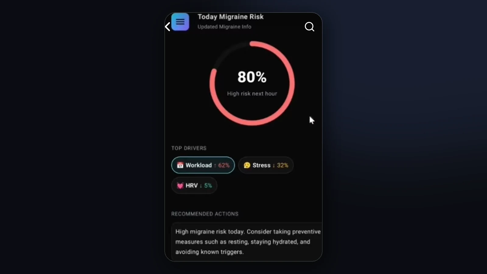
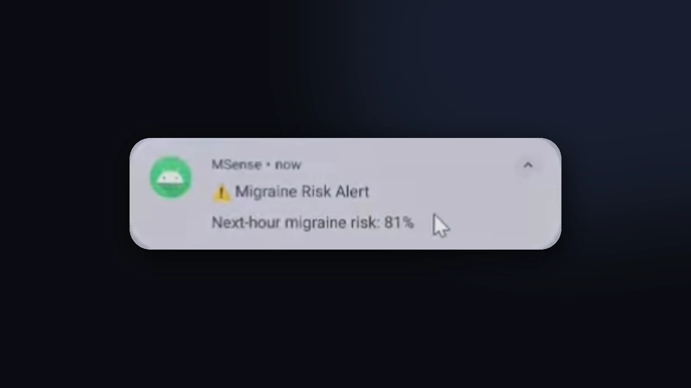

Mobile · AI/MLJunction 2025
MigraineMSense
An AI-powered mobile app that forecasts next-hour migraine risk from physiological and lifestyle signals, and explains which factors are driving that risk.
- Problem
- People often notice migraine triggers only after an attack starts.
- What I built
- An LSTM that forecasts next-hour risk, shown in a React Native app with the factors driving it.
- Result
- Working end-to-end prototype built at Junction 2025: data pipeline to model to API to app.

Problem
Migraines often follow patterns in stress, workload and physiology that people only notice afterwards.
The goal was an early warning: estimate the risk for the next hour and show which factors contribute, so a user can act before an attack rather than after.
Solution
- Risk forecastAn LSTM reads the last 24 hours of signals and predicts next-hour risk.
- ExplanationsIntegrated Gradients shows how much each feature contributed.
- Mobile appRisk score, contributing factors, historical trends and risk alerts.
- Data backendExpress.js REST API on a Supabase-backed pipeline.
My contribution
What I built
- Developed the React Native and Expo mobile frontend.
- Integrated the Express.js REST API and Supabase-backed data pipeline to display risk scores, contributing factors and trends.
Built together with the team
- End-to-end ML pipeline on 600 days of synthetic hourly data: preprocessing and feature engineering on workload, stress and HRV.
- TensorFlow LSTM on 24-hour sequences, explained with Integrated Gradients.
Technical implementation
End-to-end pipeline
Hourly signals600 days · synthetic
Featuresworkload · stress · HRV
24 h window
LSTMTensorFlow · next-hour risk
Integrated Gradientsper-feature attribution
Express + SupabaseREST API · storage
REST
Mobile appReact Native · Expo
Data noteThe model was trained on synthetic data generated for the hackathon, so this is a working prototype of the pipeline, not a validated medical tool.
Visual walkthrough


Results & lessons
End-to-enddata pipeline → LSTM → REST API → mobile app, built at Junction 2025
24 h → 1 hinput window and forecast horizon
600 daysof synthetic hourly training data
What I learned
- Connecting a model to a real app means agreeing early on the API contract between the ML side and the frontend.
- Showing why a risk is high matters as much to users as the number itself.
What I'd improve next
- Train and evaluate on real wearable data, and report forecast accuracy.